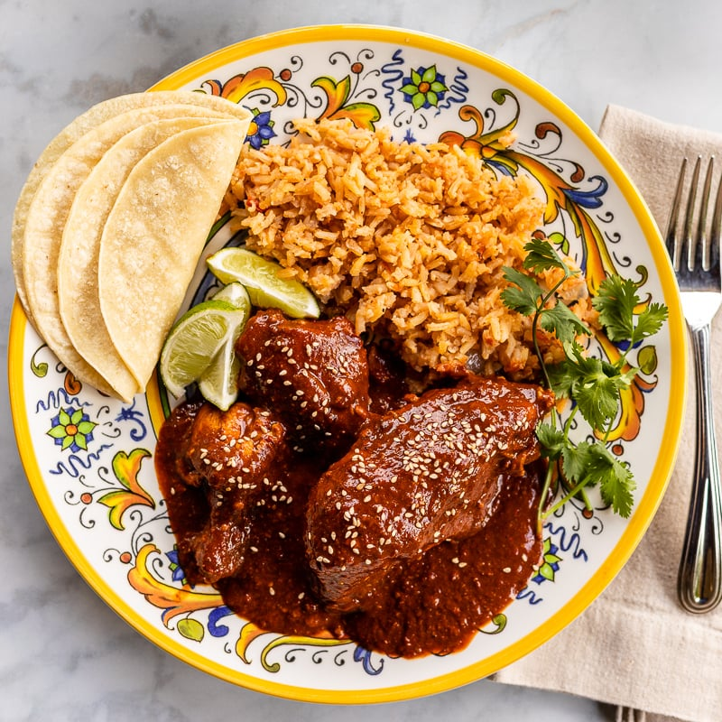

Smelling and tasting each one, including the chiles, to create a
connection with each—and to learn how to build
the flavors that make a great mole. The payoff is a luscious and
complex sauce that drapes over tender chicken.
1 (3 1/2-ounce) bolillo or demi baguette, torn into pieces (about 5
1/2 cups)
1 (about 3-ounce) Mexican chocolate disk (such as Dandelion or Ibarra)
Cooked long-grain white rice, for serving
Directions
Step 1
Bring 8 cups water and 1/2 tablespoon salt to a boil in a large
stockpot over high. Reduce heat to medium-low, and add chicken. Cook
until chicken is tender and a thermometer inserted in thickest portion
of meat registers 155°F, about 30 minutes. Remove chicken; set aside
on a large plate. Reserve 4 cups chicken cooking liquid in a large
heatproof bowl; discard remaining cooking liquid.
Step 2
Heat 1/4 cup vegetable oil in a 12-inch skillet over medium-high. Add
8 garlic cloves; cook, stirring constantly, until fragrant, about 1
minute. Add tomatoes, onions, and 1/2 tablespoon salt; cook, stirring
occasionally, until onions are translucent and softened, about 8
minutes. Transfer mixture to a blender. Secure lid on blender, and
remove center piece to allow steam to escape. Place a kitchen towel
over opening in lid. Process until smooth, about 1 minute. Transfer
mixture to a large bowl, and set aside.
Step 3
Wipe skillet clean. Add 3 cups vegetable oil; heat over medium-high.
Working with a few different types of chiles at a time, place in a
spider, and submerge in hot oil for 2 seconds per batch. Remove from
oil using spider, and place in a large heat-proof bowl. Repeat with
remaining chiles and remaining 4 garlic cloves.
Step 4
Place sesame seeds and pepitas in a medium metal strainer; submerge in
hot oil in skillet over medium-high. Cook, stirring mixture inside
strainer and shaking occasionally, until seeds are golden brown and
fragrant, about 2 minutes. Transfer seed mixture to bowl with Chile
mixture.
Step 5
Working with 1 tortilla at a time, add to hot oil in skillet over
medium-high. Cook, turning occasionally, until golden brown, 30
seconds to 1 minute. Transfer fried tortillas to a plate lined with
paper towels; let cool 5 minutes. Break into 2-inch pieces. (Strained
and cooled oil may be reused for frying.)
Step 6
Add chile mixture, tortilla pieces, and bolillo pieces to reserved 4
cups chicken cooking liquid in bowl. Let stand until liquid is almost
absorbed and bolillo has softened, about 10 minutes. Transfer mixture
to a blender; process until smooth, about 1 minute.
Step 7
Heat remaining 1/2 cup vegetable oil in a large pot over medium. Add
tomato mixture; cook, stirring constantly, until heated through, about
1 minute. Add blended chile mixture and chocolate disk. Bring to a
simmer over medium-high. Cook, stirring occasionally, until chocolate
has melted and mixture is well combined, about 20 minutes. Add cooked
chicken and remaining 1 tablespoon salt; stir to submerge in mole.
Reduce heat to medium-low; cover and simmer until chicken is heated
through, 10 to 15 minutes. Serve with rice and tortillas, and garnish
with additional sesame seeds.